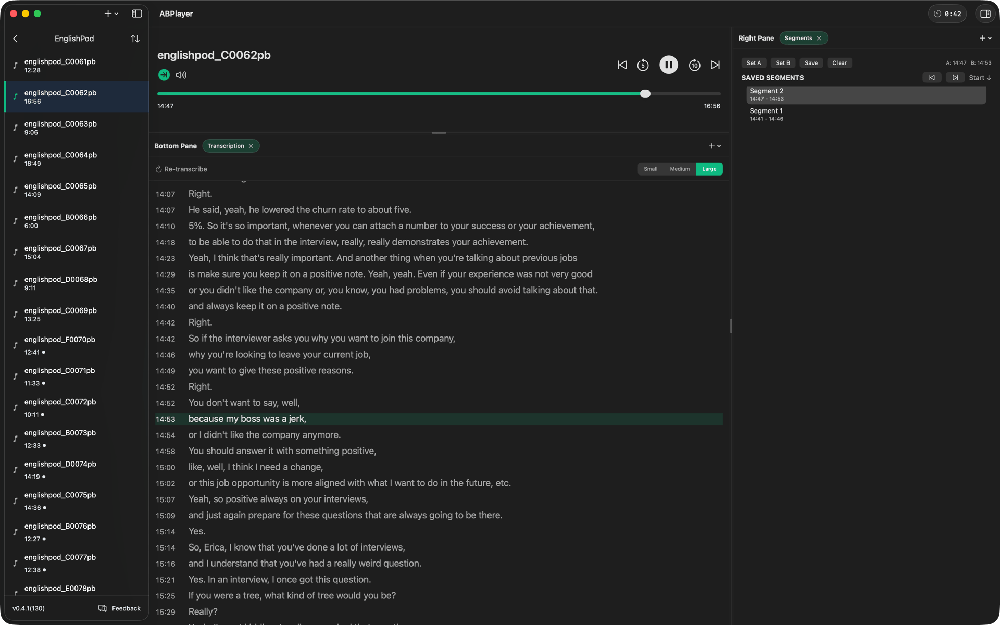
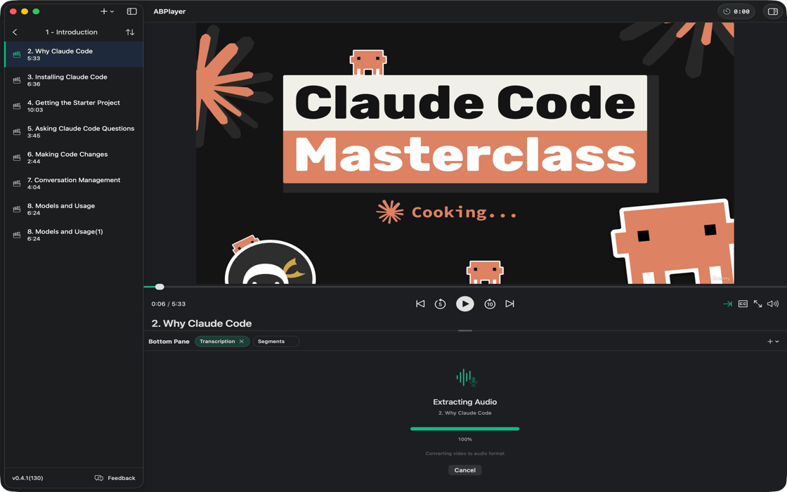
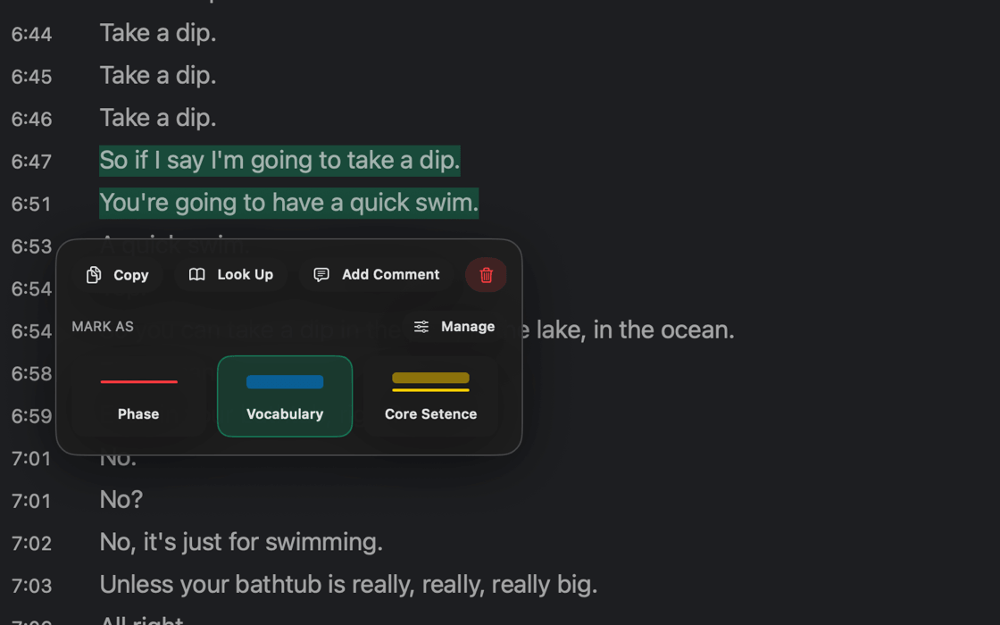
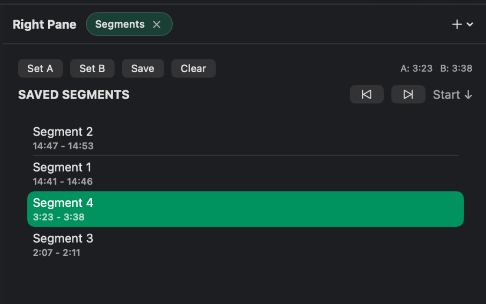
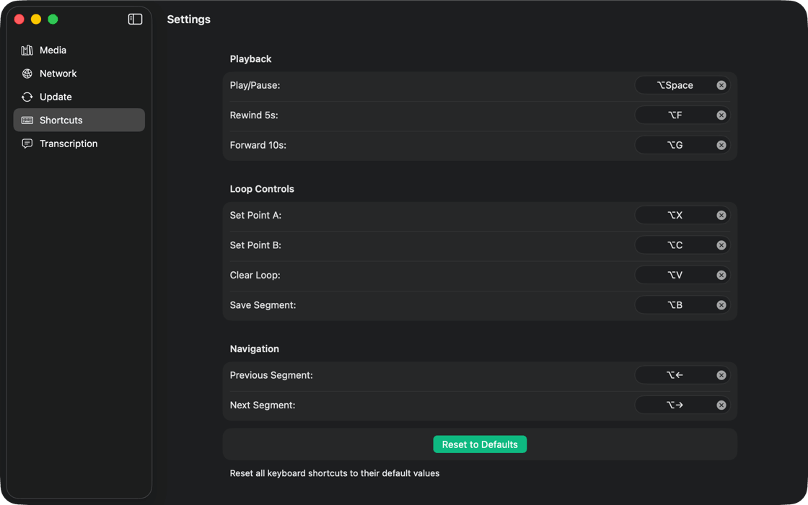
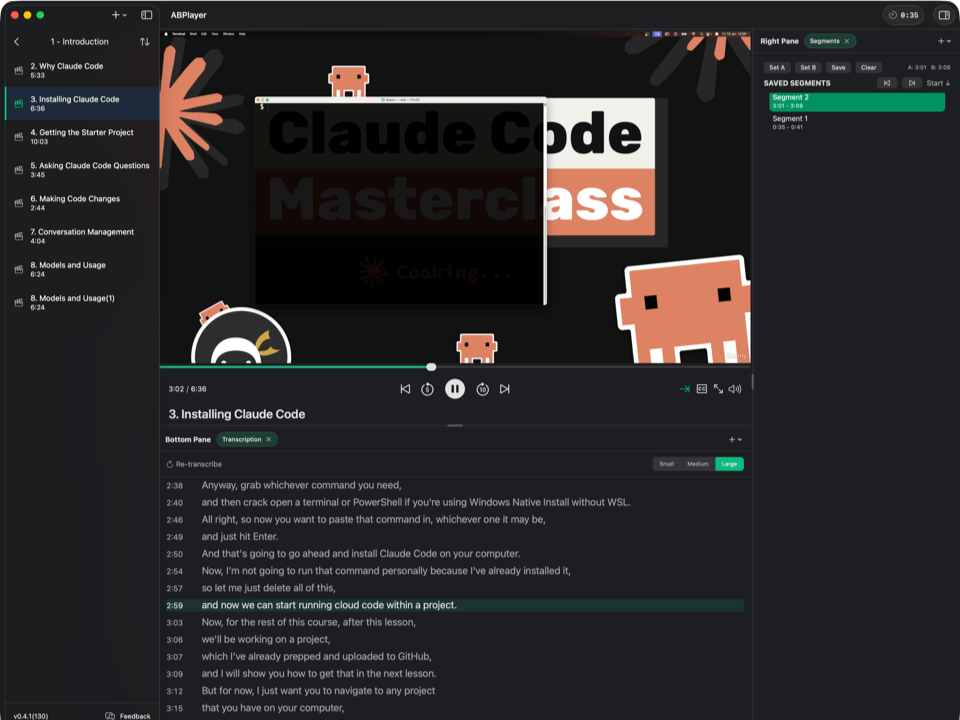
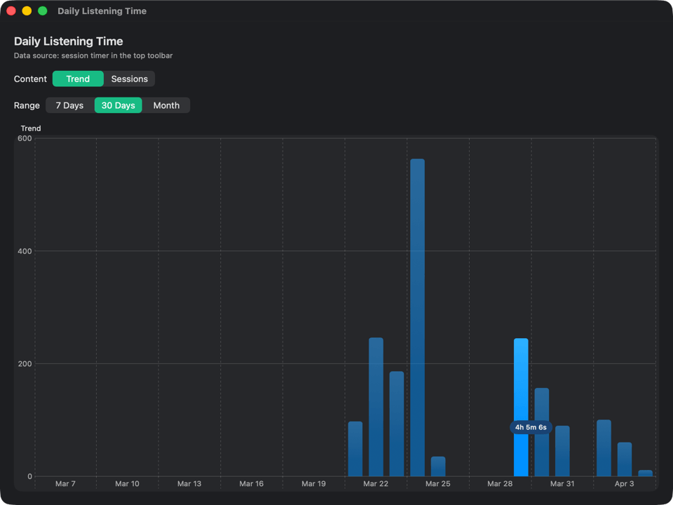

AI 本地转录、AB 循环播放、智能标注笔记
专为英语听力学习者打造的原生
macOS 应用

从转录到标注，从循环到复习，覆盖完整的精听学习闭环
基于 WhisperKit 在 Apple 芯片上本地运行，一键将任意音频/视频转为逐句字幕。无需联网，无需 API 费用，隐私完全在手。

在字幕上直接高亮生词、标注重点句子，支持自定义颜色和样式。所有标注可归档到笔记本，复习时一目了然。

听到难句？设定 A/B 两点即可自动循环。支持保存多个片段并加标签，随时回到难点反复精听。

所有核心操作均有快捷键覆盖。设 A 点、设 B 点、跳转、标注——双手不离键盘，精听效率翻倍。

传统播放器的"倒退 5 秒"远远不够。ABPlayer 的 AB 循环让你精确锁定每一个难句，反复播放直到彻底听懂。

ABPlayer 自动追踪你每天的听力练习时长，生成可视化图表。用数据驱动学习习惯，让坚持变得有据可查。
